My own boards, schemas and test charts, made while I planned the course and built the scoring. Elements are redacted.
MYWAY · STORYBOARD, GAMEPLAY AND ACTIVITIES
the course, its missions and what each activity asks
SKETCH 1 OF 9How a course gets builtA flow that starts from the learning objectives. The left branch leads to learning outcomes, scope and sequence, lesson plans and the teacher’s guide. The middle branch runs through the course narrative and asset maps to the physical storyboard, the assets and the student book. The right branch is MyWay: challenge objectives, missions, narrative and programming notes, the activity guide and the digital storyboard. Numbered circles mark the largest workloads.FED INTO ·What a learner plays ▸
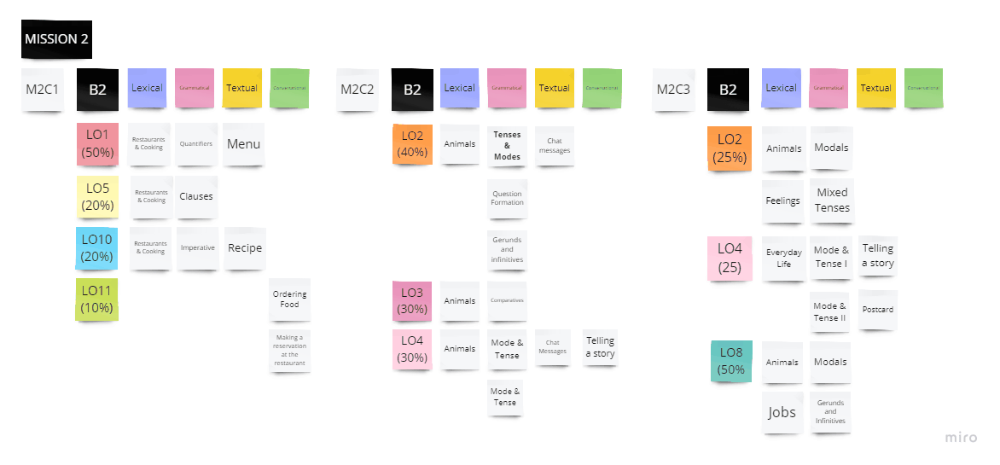
SKETCH 2 OF 9Mapping a missionA Miro board for Mission 2, set at B2. Each of its three challenges lists its learning objectives with their weighting, then the lexical, grammatical, textual and conversational content that covers each one: restaurants and cooking with quantifiers and a recipe, animals with tenses and chat messages, jobs with modals.FED INTO ·What a learner plays ▸
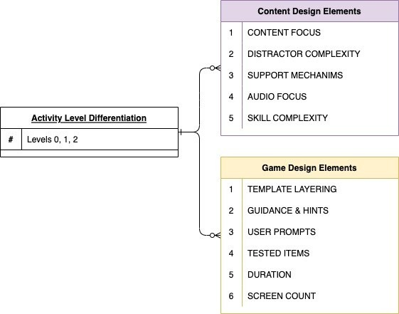
SKETCH 3 OF 9What a level changesA schema. A box reading activity level differentiation, levels zero, one and two, branches to two lists. Content design elements: content focus, distractor complexity, support mechanisms, audio focus, skill complexity. Game design elements: template layering, guidance and hints, user prompts, tested items, duration, screen count.FED INTO ·What a learner plays ▸
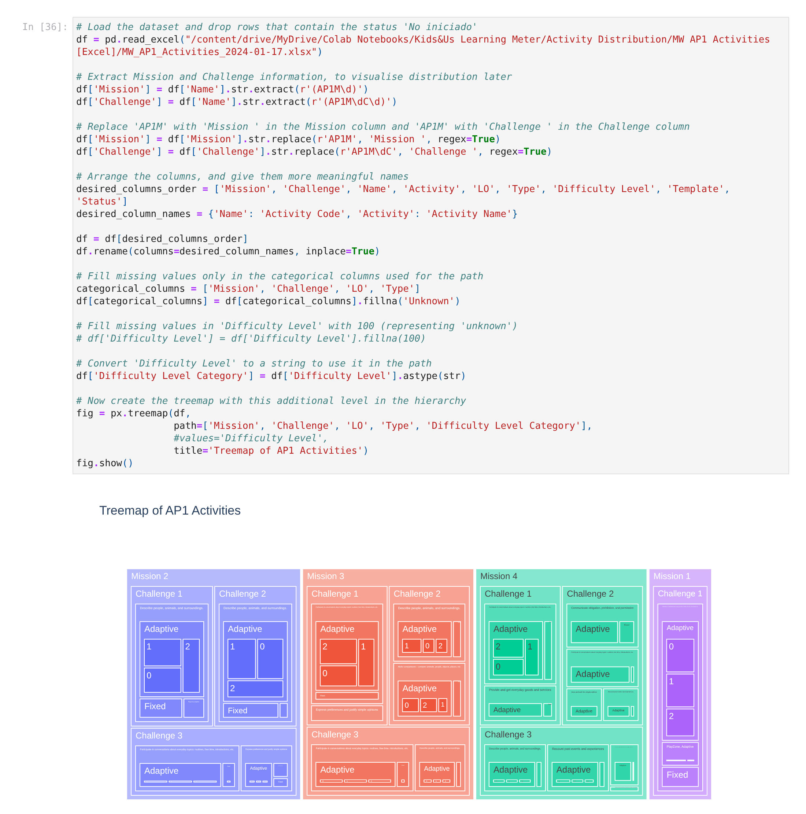
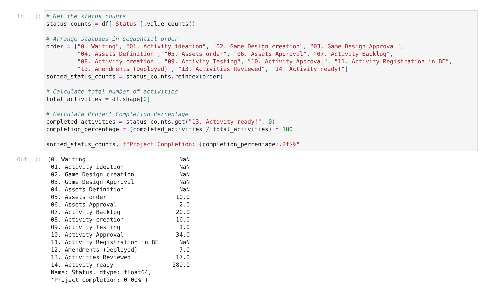
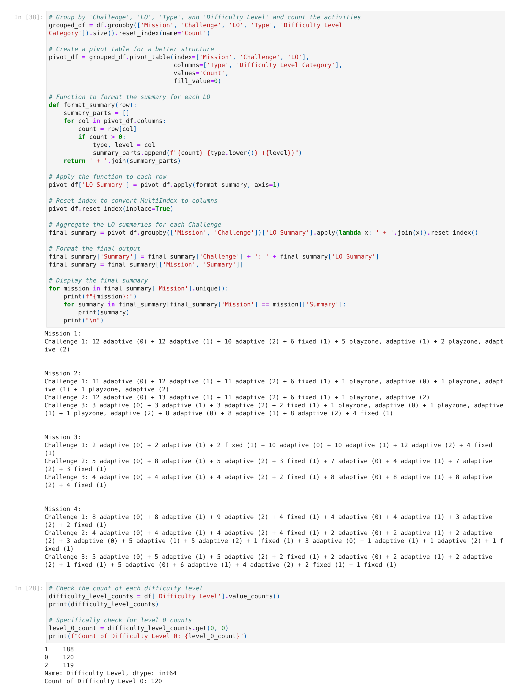
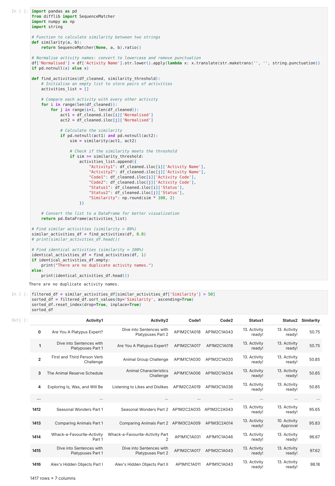
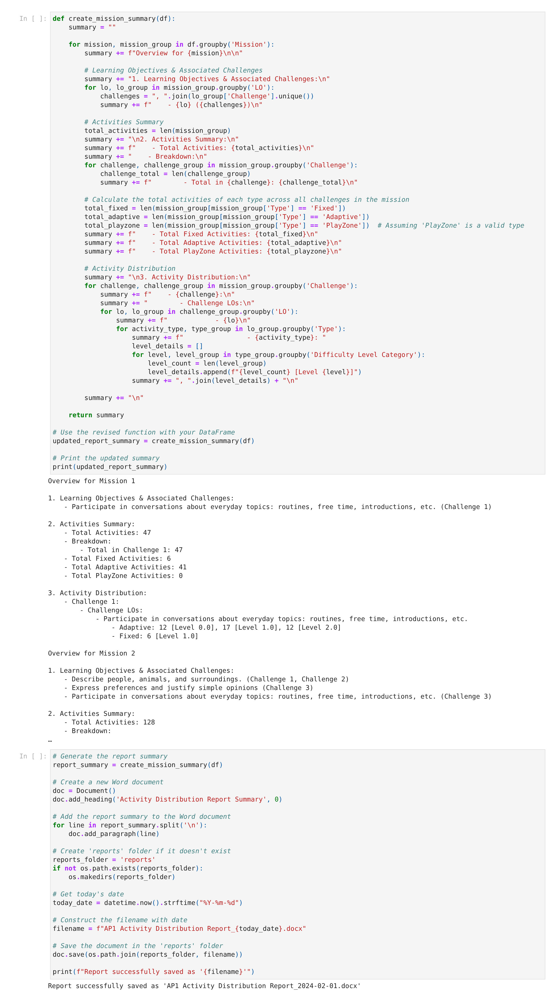
SKETCH 4 OF 9Tracking the activitiesColab notebooks I wrote to keep the AP1 course in balance: a treemap of every activity by mission, challenge, learning objective, type and level; counts of adaptive and fixed activities per challenge; the production pipeline from activity ideation to ready; a check for duplicate and near-identical activity names; and a script that writes the mission summary report.FED INTO ·What a learner plays ▸
LEARNING METER · THE AI SCORING
the system, the prompt and the tests behind the score
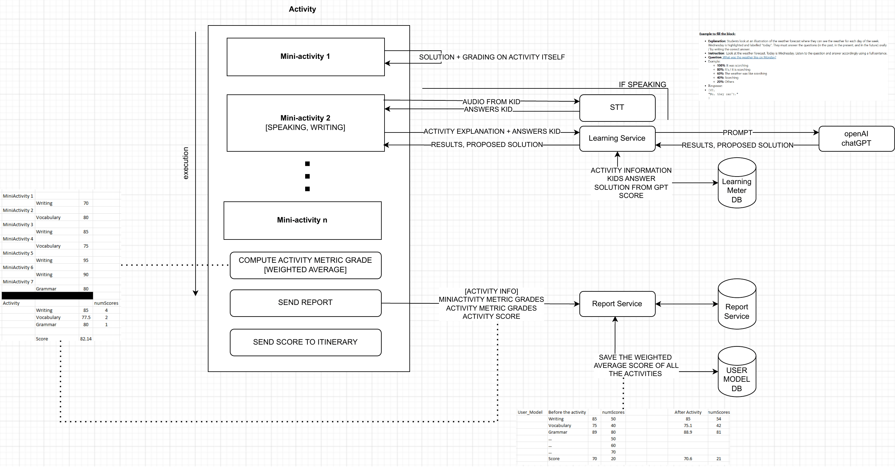
SKETCH 5 OF 9The first Learning MeterA diagram of one activity, drawn in 2023. Mini-activities run in order. A speaking or writing answer goes through speech-to-text to the Learning Service, which prompts ChatGPT and stores the result. The activity then computes a weighted grade, sends a report and saves the score to the learner’s user model. Sample tables beside it show the arithmetic.FED INTO ·Four checkpoints ▸
SKETCH 6 OF 9The prompt, and how I tested itThe 2024 version on Azure OpenAI. The Learning Service filters the sentence, checks a cache, builds the final prompt from a prompt database and a question database, checks the response format and saves everything for review. On the right sits the prompt testing suite: an evaluation set of real and synthetic answers with expected scores goes through evaluate, validate and quantify, and loops back to the prompts until the results are acceptable. Logos and a partner name are redacted.FED INTO ·Four checkpoints ▸The score screen ▸
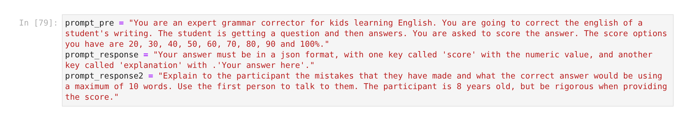
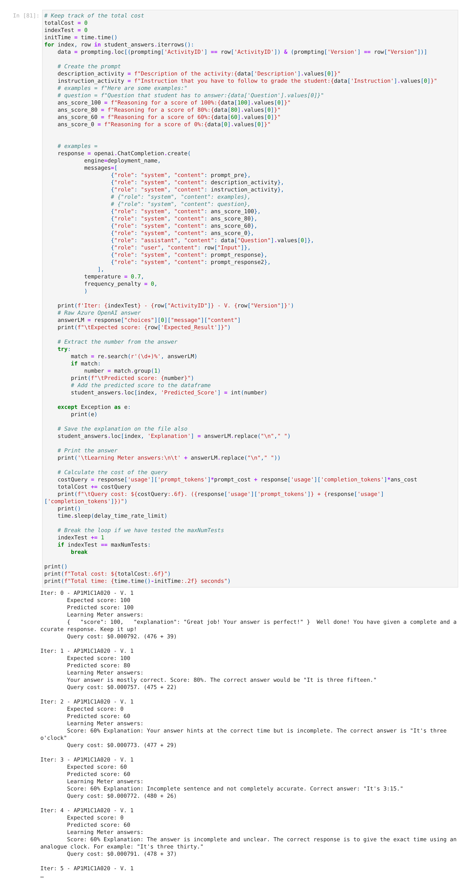
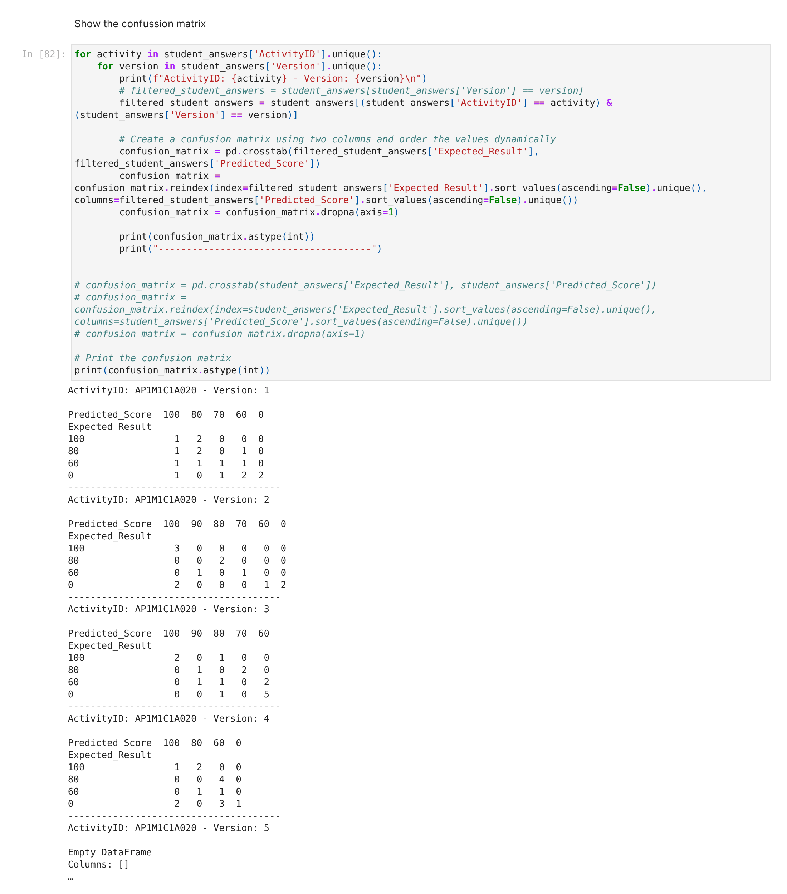
SKETCH 7 OF 9The test bench we ran togetherThe notebook used to test the scoring before launch. It holds the scoring prompt, sends each answer in the test set to Azure OpenAI, prints the expected score beside the predicted one with the cost of each query, and builds a confusion matrix for every activity version.FED INTO ·Four checkpoints ▸The score screen ▸
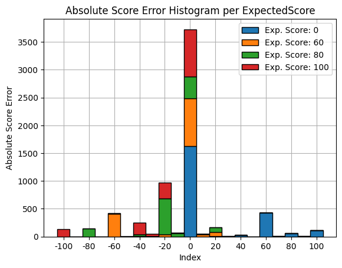
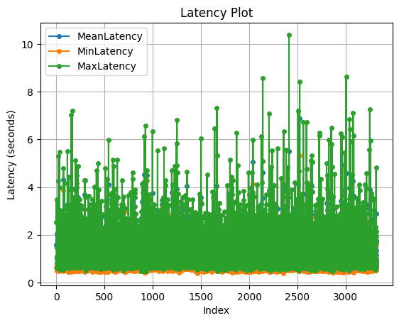
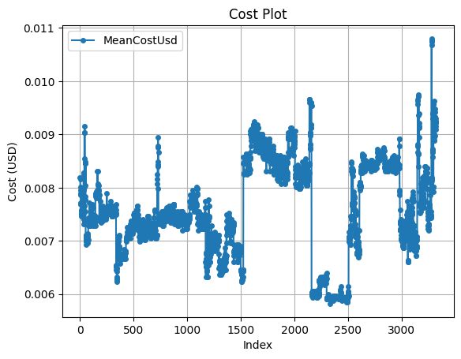
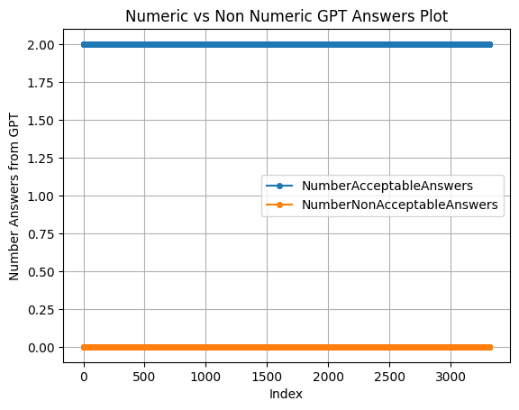
SKETCH 8 OF 9Reading the test runsFour charts from one run over the evaluation set: how far each score landed from the expected one, how long each query took, what each cost, and whether every answer came back in a format the app could read.FED INTO ·The score screen ▸
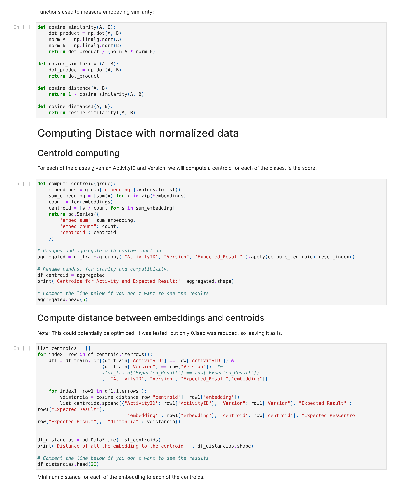
SKETCH 9 OF 9Scoring by distanceA second approach to scoring. Each answer becomes an embedding, a centroid is computed for every score group within an activity, and a new answer takes the score of the nearest centroid.FED INTO ·Four checkpoints ▸